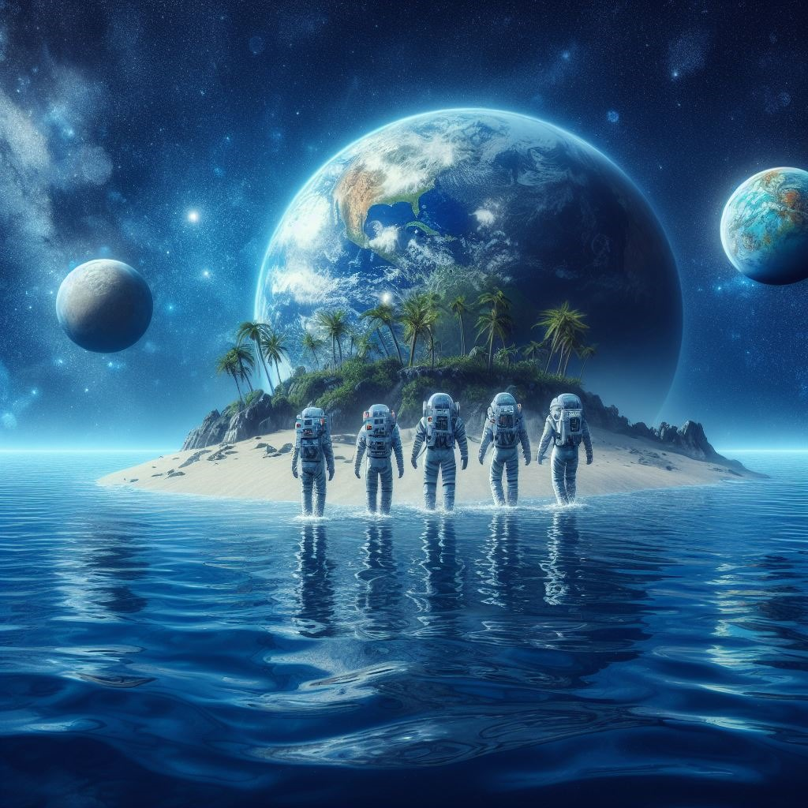
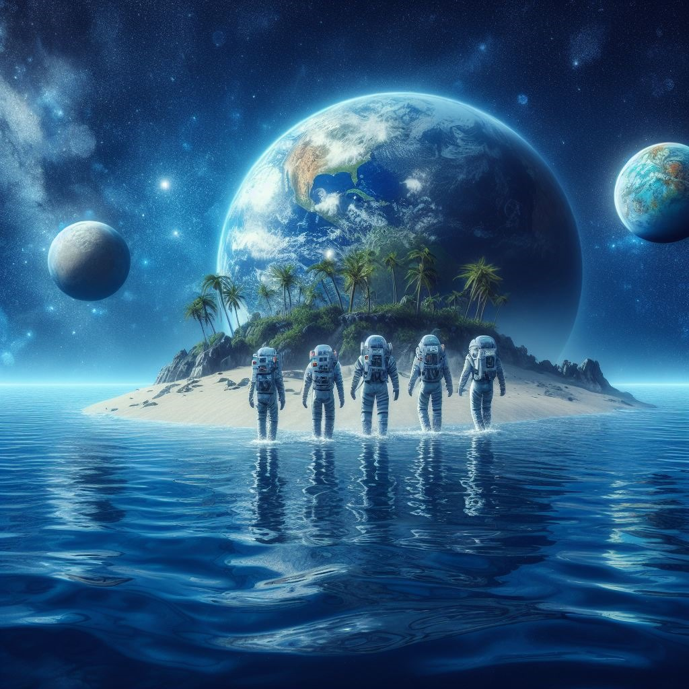

The star:
These stars are common in our galaxy and often exhibit a longer lifespan compared to more massive ones.
Their relative stability makes them favorable environments for the development and evolution of
planetary systems, such as the one hosting Aqualius.
The position of Aqualius in the habitable zone around this star is of particular significance. This
specific range of distance ensures that the planet experiences conditions where water can exist in a
liquid state. The presence of liquid water is fundamental for habitability, as it is an essential
component for life as we know it. This thermal balance in the habitable zone allows Aqualius to possess
ideal conditions for the development and preservation of life. Another essential characteristic is the
planet's orbit relative to its star.
An Orbital stability is essential for maintaining consistent and predictable climatic conditions on a
planet over time. An unstable orbit could lead to significant fluctuations in distance from the star,
causing unpredictable temperature changes and challenging conditions for the evolution and survival of
life. In summary, a stable orbit is crucial for sustaining a stable and favorable environment for life
to thrive.
Size and Gravity
It has a size of 3 times the mass of Earth and gravity that allows for the retention of an atmosphere
Surface
The surface of Aqualius consists mainly of vast interconnected oceans with a single habitable island, a
natural refuge amidst the water
Atmospheric Composition
Aqualius' atmosphere is primarily composed of oxygen and nitrogen, providing a suitable mix for human
respiration
Magnetic Field
Aqualius possesses a robust magnetic field generated by a moving metallic core, protecting the
atmosphere
and
surface from solar and cosmic radiation
Atmosphere:
It's not enough for the planet to have an atmosphere. Aqualius' atmosphere is primarily composed of
oxygen and nitrogen, providing a suitable mix for human respiration. Oxygen is essential as an oxidant
agent to support an efficient metabolism, hence, an atmosphere containing oxygen at adequate levels is
crucial for a complex life. Additionally, the presence of oxygen in the form of ozone (O₃) in the
atmosphere is important for acts as a shield, absorbing harmful ultraviolet radiation from the star,
particularly UV-B and UV-C rays. This radiation can cause genetic damage to organisms. Also for climate
Regulation, because it plays a role in regulating climate by influencing the distribution of solar
radiation in the atmosphere, impacting climate patterns and global temperatures.
Nitrogen plays a key role in the composition of molecules such as proteins and nucleic acids. Carbon
dioxide is necessary as a source of Carbon, although excessive amounts can be harmful. Water vapor is
vital for regulating the climate and the water cycle on the planet. Additionally, it is essential for
many biological processes. Small amounts of other greenhouse gasses, such as methane, help retain heat
and maintain temperatures suitable for life. The atmosphere of Aqualius should not contain dangerous
levels of contaminants or toxic compounds that could harm organisms.
The surface of Aqualius consists mainly of vast interconnected oceans with a single habitable island, a
natural refuge amidst the water. The well-defined ocean currents and the balanced and humid atmosphere
provides Aqualius with a stable and moderate climate.
Magnetic Field:
Aqualius boasts a robust magnetic field generated by a mobile metallic core, shielding its atmosphere
and
surface from solar and cosmic radiation. This crucial defense deflects charged particles like solar wind
and cosmic radiation, preserving the atmosphere's composition and stability for optimal conditions for
life. Beyond radiation protection, the magnetic field helps maintain atmospheric stability, preventing
gas loss into space, which is essential for sustaining the necessary climatic conditions and preserving
vital elements like water on Aqualius.
Surface:
The surface of Aqualius consists mainly of vast interconnected oceans with a single habitable island, a
natural refuge amidst the water. The well-defined ocean currents and the balanced and humid atmosphere
provides Aqualius with a stable and moderate climate.
Habitable Island:
The population of Aqualius resides on a single habitable island
that
offers solid
ground, natural resources, and a refuge from oceanic conditions.
Island’s Agriculture:
Agriculture is practiced on the island, utilizing the land to
cultivate food and maintain a sustainable source of resources.
Fishing:
The primary source of food comes from fishing in the surrounding
oceans, where aquatic biodiversity provides a variety of edible marine species.
Survival on Aqualius:
In the expanse of Aqualius, a planet where oceans cradle its entirety, emerges a singular island: The
Refuge. In this landmass surrounded by the cosmic waters, the population of Aqualius has forged their
home, their sanctuary.
The Refuge stands as the sole piece of solid ground in this vast ocean. Within its embrace, the people
of Aqualius have learned to extract life from land and water in harmony. With meticulously honed
navigation skills, they explore the surroundings, unraveling the mysteries of the waters that encircle
them.
Agriculture becomes a sacred act in this oasis of greenery. The land of The Refuge, carefully
cultivated, provides sustenance that grows in tune with the seasons and the dance of the stars. The
harvest is a tribute to the land that sustains life amidst the watery vastness.
However, the true essence of survival is drawn from the depths surrounding the island. Fishing becomes a
symphony, a choreographed dance with the sea currents and the biological richness hidden in the waters.
Each catch is a testament to the balance between taking and preserving.
In this unique refuge, the population of Aqualius has learned not only to survive but to thrive in
symbiosis with their environment. The island is not just a home; it is a testament to resilience,
adaptation, and interdependence with nature in a vast ocean that, for them, is their entire cosmos. Each
day in The Refuge is a narrative of life, woven with threads of love for the land and the constant
embrace of the surrounding ocean.
 
